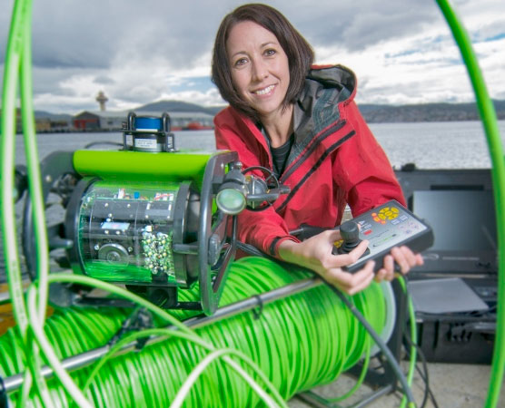
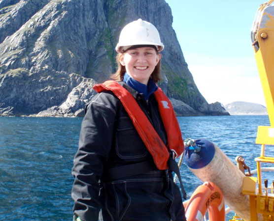

About the editors
Vanessa Lucieer

Vanessa Lucieer is a marine spatial analyst at the Institute for Marine and Antarctic Studies at the University of Tasmania, Australia. She has a background in marine surveying and remote sensing techniques for ocean mapping. For over 15 years Vanessa has been involved in research and mapping of the world’s seabed’s from Norway to Antarctica exploring the details of shapes and textures that represent unique seafloor habitats. The results of this research have had a wide variety of applications from marine biodiversity assessment to marine resource management. During her many years in the field collecting data and in the office processing data – she has always had a keen desire to want to reveal the beauty of the seafloor dynamics through an artistic avenue. The Richard Lounsbery Foundation has provided this opportunity.
“I wish to share with scientists, artists and the public my curiosity about the ocean and its wonders. The ocean is vast, remote and largely unfamiliar. Our efforts to define it test our ability to capture data using sound, vision or light with robotic technologies that spread our sensory reach hundreds or thousands of meters below the surface. In my work as a marine spatial analyst, I use these data to draw seafloor landscapes, often revealing their contours and structure for the first time. I try to see what the patterns of seafloor shapes and textures can tell me about the habitats and lifeforms they embrace. A perpetual challenge is to understand the scale of mapping I must choose for this relationship between the seafloor and its biology to come into focus.”
Margaret Dolan

Margaret Dolan is a marine scientist working with seabed and habitat mapping at the Geological Survey of Norway. She has been using acoustic methods for seabed mapping since 2001, with analysis and interpretation of data fuelling her fascination with the structure, composition and habitats of the underwater world first observed as a scuba diver more than 20 years ago.
”I have always been fascinated by patterns in nature and my work puts me in the privileged position of being among the first to see the incredible array of forms and features present on the sea floor. There is no doubt that the data from acoustic seabed mapping are scientifically invaluable, providing information for a wide range of applications, but the imagery resulting from high-tech data acquisition also reveal the diverse natural artwork formed by a multitude of processes operating at the seafloor. The beauty of this acoustic imagery is often in the eye of the beholder. The images may be fascinating to one person because they explain a scientific story, to another because they provide useful information, and to many more simply because the images are pleasing to the eye! Visual soundings was born as a vision for seabed mappers to share their favourite acoustic imagery with a wider audience, illuminating the wonders of the sea floor, and contributing to the wonderful world that bridges science and art.”